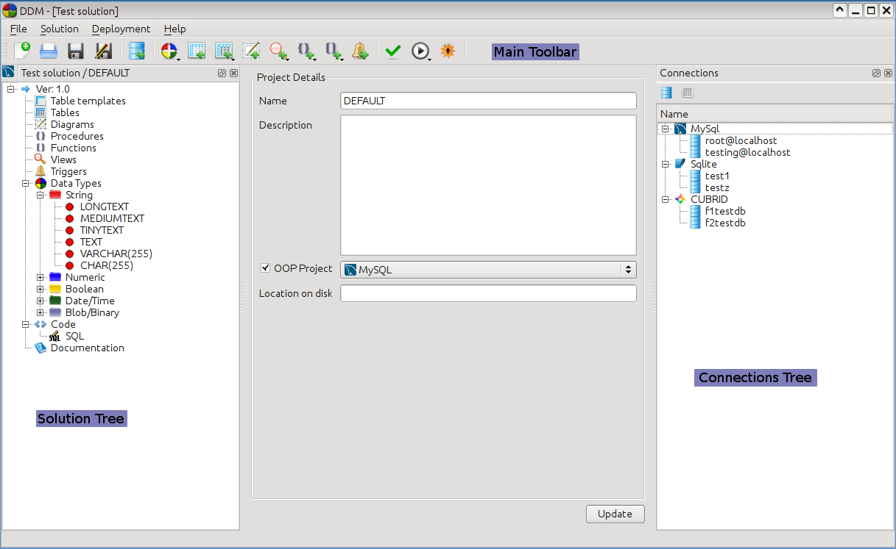
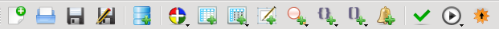
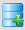

Welcome to DDM - The Database Deployment Manager
Introduction
DDM is a unique database design tool for getting into control in the
database creation
and initial setup process by helping professionals to have consistent
database layouts and delivery between projects, sites and versions. DDM
is available for Linux and Windows operating systems.
DDM supports the following database engines:
- MySql (version 5.0 +)
- SqLite (version 2 and 3)
- CUBRID (version 9.1)
For the first one user, a list of DDM features:
- Creation of database objects (Tables, Views, Triggers,
Procedures, Functions - where supported)
- Deploying the above mentioned DB objects into databases
- Maintaining a documentation for the project you deployed
- Version management for your projects
- E-R diagram creation
- Database browsing
But DDM:
- is not a database administration/management tool. There are
much better alternatives more suitable for this purpose.
- is not a very good SQL code editor platform. However we are
working to make it better :)
Getting
around the application
The application has a classical windowed interface, with
a main window, and various dock windows floating around. This setup is
familiar to users of other applications, so it must be straightforward
to use the app.
IDE overview
This is the main window of the application

The following main components are marked on the screenshot:
1. Main Toolbar - this is the toolbar containing all the main actions
you can perform with the application
2. The Solution tree - this contains the solution and all the objects
that were created
3. Connections - this tree contains all the Connections to your
databases.
The
Main Toolbar

All the actions you can perform are located on this
toolbar. From left to right these are:
| New Solution - Clicking this button will allow you to create a new solution. In the New Project Dialog you can specify what kind of project do you want to create. | |
| Open Solution - clicking this button will open a solution you have saved some time in the past. | |
| Save Solution - clicking this button will save your solution to the disk. | |
| Save Solution As... - clicking this button will save your solution to the disk under a different name | |
|  | New Connection - clicking this button will open the Create New Connection window |
| New Datatype - clicking this button will open a popup menu where you can choose what kind of datatype to create | |
| New Table - clicking this button will open the Create New Table window. If you are working on a project with OOP features you will also need to create table instances. | |
| New Table Instance - clicking this button will create New Table Instances. If you are working on a project with OOP features you will need to create table instances since the SQL code is generated from them, not from Tables. By pressing and holding the mouse on the button you will get a menu where you can select one table instance, instead of the dialog which allows you to select the tables you want to instantiate. | |
| New Diagram - clicking this button will open the Create New Diagram window. | |
| New View - clicking this button will open the Create New View window. By default you are given the option to create a view with our standard query builder, however you can also create a view by typing in it's sql, in this case press and hold the mouse on the button til you get the menu. | |
| New Procedure - clicking this button will open the Create New Guided Procedure window. By creating a guided procedure you are able to specify the parameters, name, type via a GUI, while creating the procedure and DDM will help you create the SQL for the method. The alternative is to create a procedure in SQL mode, so this way you will just type in all the SQL commands for creating the procedure. Note: this button is available only for the MySql and CUBRID, Sqlite does not support stored methods. Pay special attention to code correctness and name uniqueness while manually creating items. |
|
| New Function - clicking this button will open the Create New Guided Function window. By creating a guided procedure you are able to specify the parameters, name, type, returrn type via a GUI, while creating the procedure and DDM will help you create the SQL for the method. The alternative is to create a function in SQL mode, so this way you will just type in all the SQL commands for creating the function. Note: this button is available only for the MySql and CUBRID, Sqlite does not support stored methods. |
|
| New Trigger - clicking this button will open the Create New Trigger window. | |
| Validate - clicking this button will Validate the solution. | |
| Deploy solution - clicking this button will deploy the solution in the connections you specify in the Deploy solution dialog box | |
| Update Script - clicking this button will generate update script from the versions you specify. |